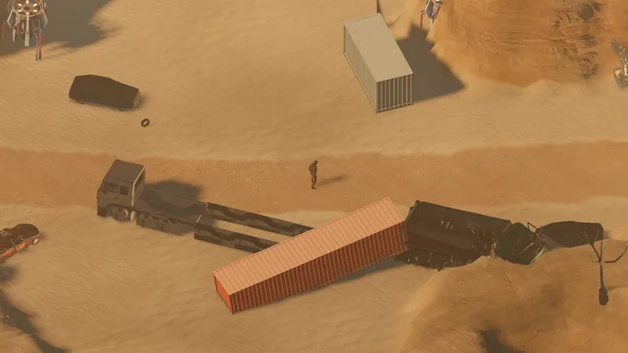
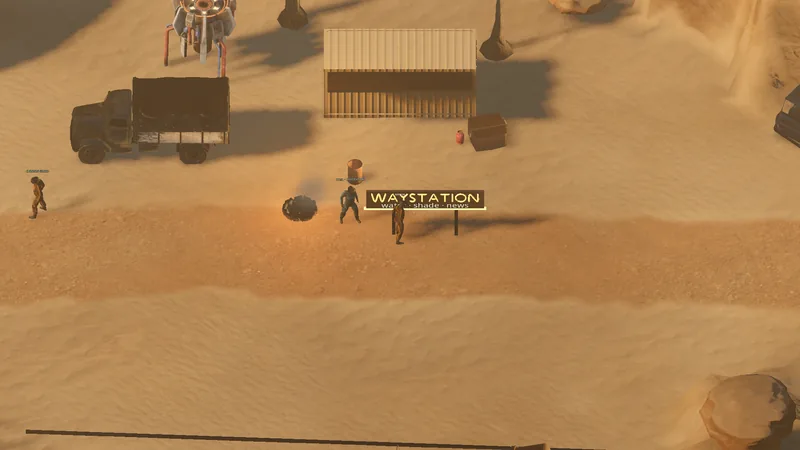
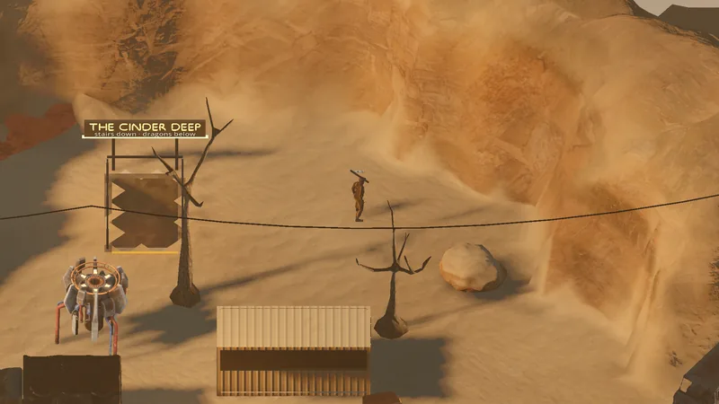
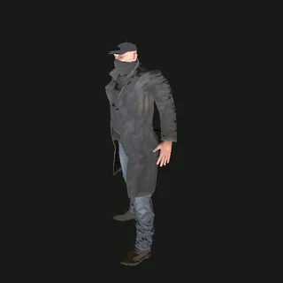

Ruta · Superficie · Mitad este · Puerta de Dustline
Frontier Road
Panorama
La mitad este de la ruta: un valle seco y largo con torres de relé y chatarra. Al final aparecen los muros de Dustline; los saqueadores también lo saben.






Tu primer viaje · paso 5/6Un valle seco y largo con Dustline en el horizonte. El borde de The Sump, al norte, es un desvío de caza opcional.
Salidas y conexiones
Niveles debajo: The Cinder Deep (1).
| Hacia | Tipo | Cartel de salida | Borde | Estado |
|---|---|---|---|---|
| The Saltpan | Camino · puerta | WEST · THE SALTPAN | SW | Jugable hoy |
| Dustline | Camino · puerta | DUSTLINE GATE | E | Jugable hoy |
| The Sump | Camino | NORTH · SUMP EDGE | N | Planeada |
| The Cinder Deep | Pozo · escaleras | STAIRS DOWN · THE CINDER DEEP | CLEFT | Jugable hoy |
Criaturas
3 criaturas a la vez cuando está todo lleno.
| Criatura | Cantidad | Reaparición | XP | PV |
|---|---|---|---|---|
 Scavenger | 3 | Ubicación fija | 35 | 30 |
Gente
Hallazgos sueltos
Carteles que vas a leer
FRONTIER ROADDustline 2 km >WAYSTATIONwater · shade · newsDUSTLINEeverything has a priceFRONTIER GATEtrade · rest · resupply
Lo mencionan
Ver también
The Saltpan · Dustline · The Sump · The Cinder Deep · Zonas · Mapa del mundo